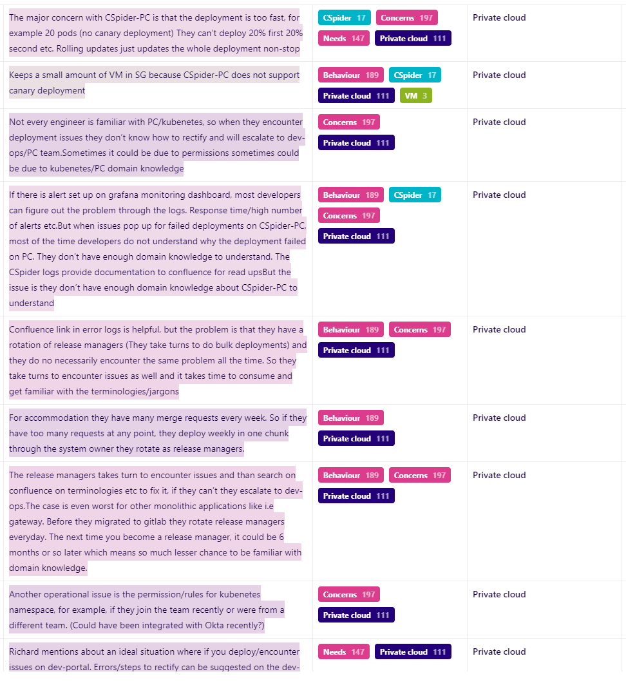

Organize around the task.
Replace a flat link dump with Manage, Plan, Build, Secure and Monitor. A searchable catalog brings ownership, source and compliance into view.
Senior Product Designer · Agoda Engineering
Give developers
a path they can follow.
The problem
My role
Led 0-to-1 design for Developer Portal and Deployment as the first designer in DevOps, building domain understanding and a measurable foundation for developer experience.
Read the complete original case study ↗Key choices
Replace a flat link dump with Manage, Plan, Build, Secure and Monitor. A searchable catalog brings ownership, source and compliance into view.
Initial fixes added in-context guidance, skipped unused repository steps, and supported leave and resume during AD handoffs. Later work introduced automation and approval workflows.
A staged private-cloud flow covers environment setup, canary rollout across data centers, and review. Information hierarchy surfaces environments and critical actions.
Evidence & outcomes · reported in original portfolio
Reported outcomes across three quarters. The original results card rounds creation time to “6 Min”; the narrative gives 6m 8s. No new measurements are attributed to the updated concept.
15+ developer interviews · 47 usability issues documented. Team: 1 Product Owner, 4–5 Engineers and 1 Frontend Engineer.
22Q4: 61.9 → 23Q2: 63.4 → 23Q4: 68.8
The existing study cites industry-average SUS of 68 and a future goal of 70+. That goal is not presented as an achieved result. The source does not provide participant counts for SUS or the deployment-ease rating.
Updated concept · Vercel-inspired developer workflow
A new visual exploration using the existing content and workflow. This is a portfolio concept, not an additional shipped contribution or measured outcome.
Research & original artifacts
